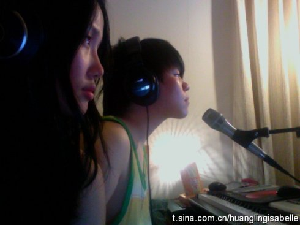

http://music.sina.com.cn/yueku/m.php?mid=2011007173254501&url=http%3A%2F%2Fsinaurl.cn%2FGcqpa&ads=1&coFlag=200006
多少自己 常石磊&黄龄
你说你找不到你 有爱却不知道 爱的目的 盼望有一个好天气 晒晒那些发霉日记
我的出现乱了你 你仿佛找到 丢掉的自己 爱是说不清的东西 原谅我迟到的日记
我是你自己 你是我自己 虽然分开 却在一起
我是你自己 这种爱虽然是分离 分享却留在心里 爱你就像爱自己
你是我自己 虽然不能牵手相依 爱却心有灵犀 我和你好好爱自己

谢谢你给我最美好的时刻